![]()
[1] 0.6740684Factor Analysis and Multidimensional Analysis
Fall 2025
Linguistic correlation
Correlation
- Many linguistic variables are related to each other in some way
- That is, if we count their occurrence in texts, the rate of occurrence will be correlated
- If one occurs more often, the other is likely to occur more (or less) often
Correlation in language
- In English, the relative frequency of adjectives is correlated to the relative frequency of nouns
- Adjectives modify nouns, so they come together
Get Out is an extraordinary movie, a great catapulting leap forward…
- This isn’t universal—see Hemingway’s novels—but it is a strong correlation
Adjectives vs. nouns in COCA
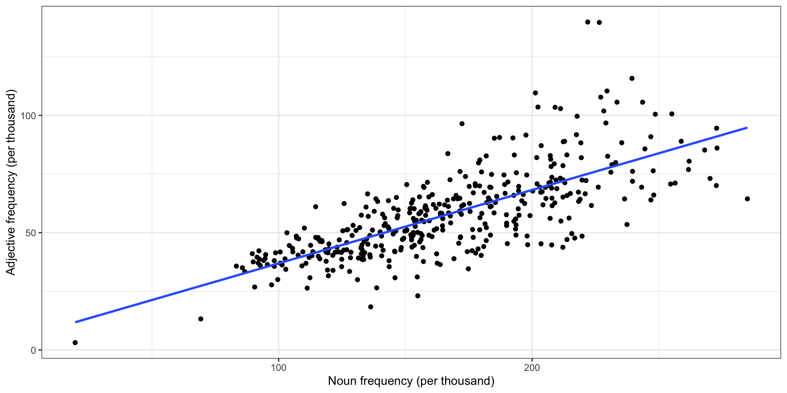
Adjectives vs. verbs in COCA
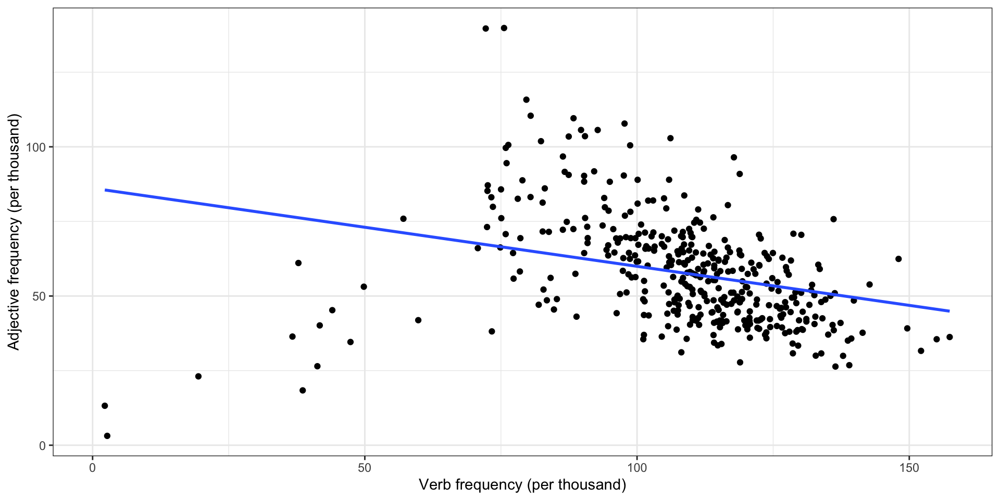
Pronouns vs. coordinators in COCA
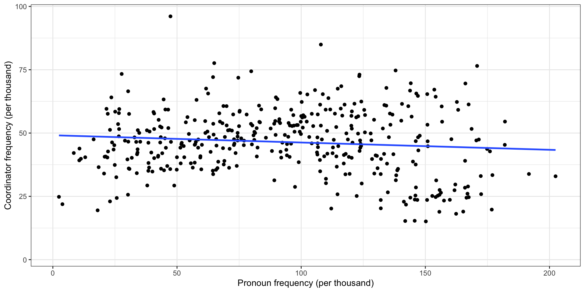
Correlation measures
Pearson correlation
- Pearson correlation is the correlation coefficient you probably know best
- The correlation \(\rho\) is in \([-1, 1]\); 0 means no linear correlation, 1 means perfect linear correlation
\[ \rho(X, Y) = \frac{\operatorname{cov}(X, Y)}{\sigma_X \sigma_Y} = \frac{\sum_{i=1}^n (x_i - \bar x) (y_i - \bar y)}{\sqrt{\sum_{i=1}^n (x_i - \bar x)^2} \sqrt{\sum_{i=1}^n (y_i - \bar y)^2}} \]
For example,
Spearman correlation
- Linear (Pearson) correlation only measures linear relationships; a strong but curved relationship has correlation \(|\rho| < 1\)
- Spearman correlation uses the ranks, so it measures any monotone relationship
| Document | Adjectives | Adj. rank | Nouns | Noun rank |
|---|---|---|---|---|
| news_35 | 3.1 | 1 | 19.7 | 1 |
| news_02 | 13.2 | 2 | 69.3 | 3 |
| acad_48 | 18.4 | 3 | 136.3 | 107 |
| news_26 | 23.1 | 4 | 154.9 | 168 |
| tvm_10 | 26.4 | 5 | 111.2 | 41 |
| news_44 | 26.5 | 6 | 138.7 | 112 |
| tvm_42 | 26.8 | 7 | 90.5 | 9 |
| tvm_16 | 27.8 | 8 | 97.2 | 19 |
| spok_14 | 30.0 | 9 | 131.1 | 86 |
| tvm_40 | 30.0 | 10 | 99.6 | 23 |
Correlation examples
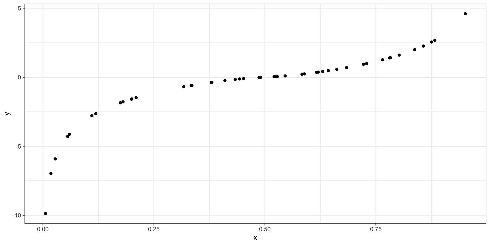
Cut-offs
Rough cut-off values are used to indicate the size of correlation (Cohen 1988: 79-80); this is a measure of effect size:
- 0 no effect
- ± 0.1 small effect
- ± 0.3 moderate effect
- ± 0.5 strong effect
Correlation matrices
Every pairwise correlation between a set of variables can be presented in a matrix:
Pearson correlation
| ADJ | ADV | NOUN | PRON | VERB | |
|---|---|---|---|---|---|
| ADJ | 1.00 | −0.17 | 0.72 | −0.64 | −0.40 |
| ADV | −0.17 | 1.00 | −0.46 | 0.65 | 0.61 |
| NOUN | 0.72 | −0.46 | 1.00 | −0.81 | −0.45 |
| PRON | −0.64 | 0.65 | −0.81 | 1.00 | 0.75 |
| VERB | −0.40 | 0.61 | −0.45 | 0.75 | 1.00 |
Spearman correlation
| ADJ | ADV | NOUN | PRON | VERB | |
|---|---|---|---|---|---|
| ADJ | 1.00 | −0.24 | 0.77 | −0.68 | −0.52 |
| ADV | −0.24 | 1.00 | −0.51 | 0.64 | 0.51 |
| NOUN | 0.77 | −0.51 | 1.00 | −0.82 | −0.55 |
| PRON | −0.68 | 0.64 | −0.82 | 1.00 | 0.77 |
| VERB | −0.52 | 0.51 | −0.55 | 0.77 | 1.00 |
The matrix
- has 1 on the diagonal
- is symmetric
- can be turned into a cool heatmap
Correlation plots
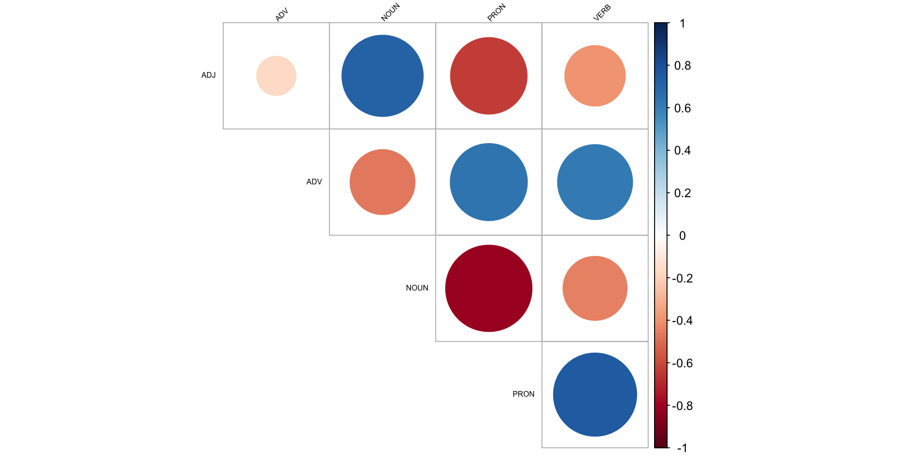
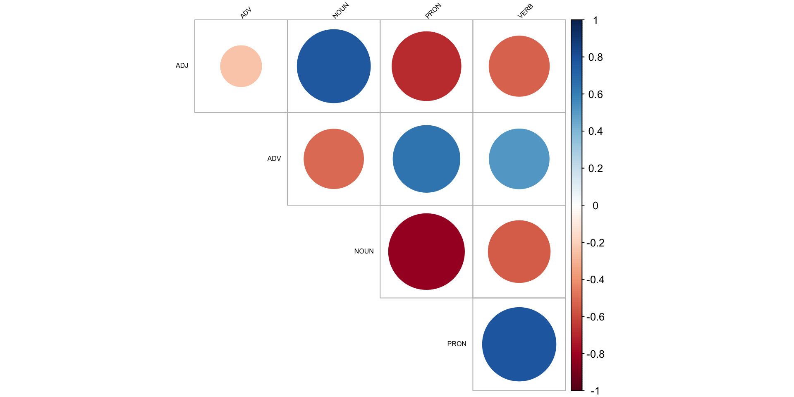
Pair plots
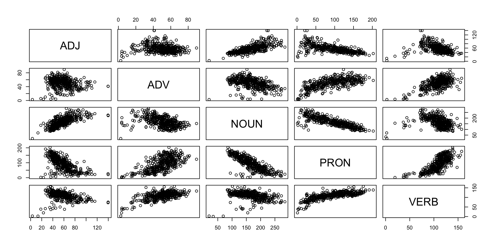
Coefficient of determination
- Pearson’s correlation coefficient r can be used to account for the amount of variance in one variable “explained” by the other variable
- For this, calculate its square: \(R^2\)
Reporting your results
There is a strong positive correlation (\(r = .55\), 95% CI [.48, .61]) between the number of nouns and the number of adjectives used in American English. This value, however, is not as large as the correlation between verbs and pronouns (\(r = .75\), 95% CI [.71, .78]), each of which explains more than half the variance of the other (\(R^2 = 56\)%).
There is a strong negative correlation (\(r_s = -.84\), \(p < .01\)) between the number of nouns and the number of pronouns used in American English. These show a complementary distribution.
Reporting your results
American English verbs and adjectives are in an inverse proportional relationship (\(r = -.61\)**), as are verbs and nouns (\(r = -.67\)**). The negative correlation between verbs and coordinators is near zero, however (\(r = -.04\)), indicating those lexical classes have no observable relationship.
(Stargazing!)
Factor analysis
Basic motivation
- Let \(X\) be an \(n \times p\) matrix of observed data, such as rates of \(p\) parts of speech in \(n\) documents
- If columns 1, 2, and 4 are strongly correlated with each other, and 3, 5, and 6 are also strongly correlated with each other, but there’s little correlation between the groups, then:
- Maybe 1, 2, and 4 measure one underlying “factor”
- Maybe 3, 5, and 6 measure a different factor
- These two factors might “explain” most of the variation in \(X\)
- How do we automatically find the factors?
More mathematically
- Let \(X\) be an \(n \times p\) matrix of observed data, such as rates of \(p\) parts of speech in \(n\) documents
- Suppose there are \(m\) common factors, where \(m < p\)
- Suppose each document \(i\) can be expressed with its common factors, plus some noise
What should this remind you of?
The factor model
The factor model is that \[ \underbrace{X}_{n \times p} = \underbrace{F}_{n \times m} \underbrace{L}_{m \times p} + \underbrace{\epsilon}_{n \times p} \] where \(X\) has been centered so its columns have mean 0.
- \(F\): each document’s factor coordinates
- \(L\): loading of each factor on original variables
- \(\epsilon\): mean 0, diagonal variance noise
- \(F\) and \(\epsilon\) are independent
Examples
\[ X = FL + \epsilon \]
- \(n\) students solve \(p\) calculus test questions
- Most variation in scores can be explained by \(m = 1\) factor: how good you are at calculus
- \(n\) people take \(p\) personality test questions
- Most personality features can be explained in terms of \(m = 5\) factors (the Big Five personality traits)
- \(n\) documents have \(p\) different linguistic features measured
- The features represent \(m\) underlying factors, like formality, information density, etc.
Fitting a factor analysis
- Factor analysis should remind you of PCA
- But PCA doesn’t have \(\epsilon\), so factor analysis does not explain independent noise, only variance that is shared
- We can find \(F\) and \(L\) by starting with PCA
- Alternately, assume \(\epsilon\) and \(F\) are both multivariate normal
- Then do maximum likelihood estimation
- Unlike PCA, we do not require factors to be orthogonal
- Any rotation of the factors is equivalent, so we choose based on interpretability
Multidimensional Analysis (MDA)
Biber’s MDA
- Multidimensional analysis (MDA) was developed by Biber (1985)
- Goal is to use factor analysis to systematically identify principles of language variation (Biber 1988)
Stages of MDA
- Identify of relevant variables
- Extract factors from variables
- Interpret factors as functional dimensions
- Place document categories on the dimensions
Step 1: Identify relevant variables
Biber defined 67 linguistic features, like
- past tense verbs
- present tense verbs
- first-person pronouns
- second-person pronouns
- that relative clauses
- present participles
- pied piping
- mean word length
- downtoners
- predictive models
- possibility modals
- contractions
These features distinguish different types of written and spoken English.
Step 2: Extract factors from variables
- From the many relevant variables, extract a few factors
- We can just use factor analysis: \[
X = FL + \epsilon
\]
- \(X\): matrix of features for each document, centered & scaled
- \(F\): each document’s factor coordinates
- \(L\): loading of each factor on original features
- To ensure there are only a few factors and each is interpretable,
- Only include variables that are correlated with at least some other variables (e.g., \(|\rho| \geq 0.2\))
- For factors, only keep loadings that are a minimum size
Step 2: Loading the corpus
Step 2: Variables are highly correlated
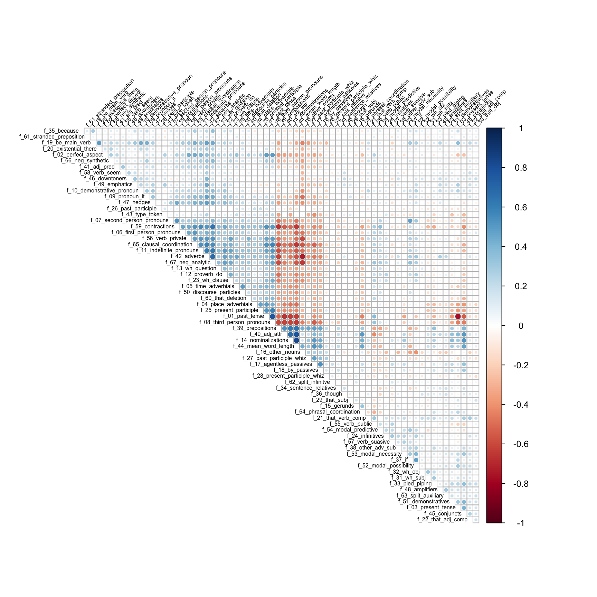
Step 2: Determine the number of factors
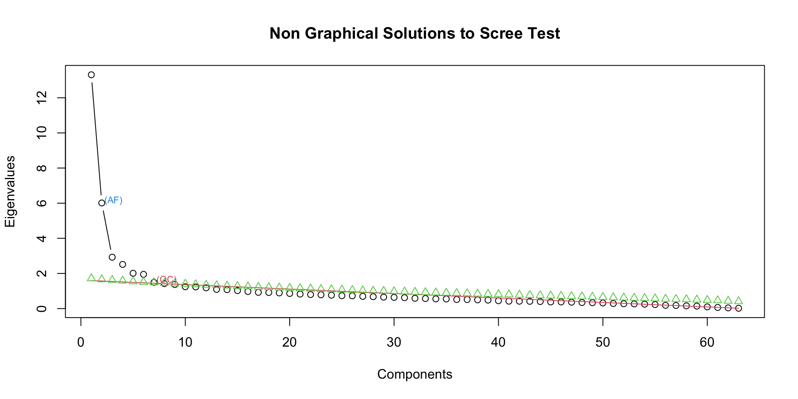
Step 2: Rotate the factors
- If we have \(m\) factors, they span an \(m\)-dimensional space
- Any other basis for that space can yield an identical fit!
- So choose the factors that help us interpret each factor as a distinct thing
For example, suppose we have \(p = 6\) variables and choose \(m = 2\)
Step 2: Rotate the factors
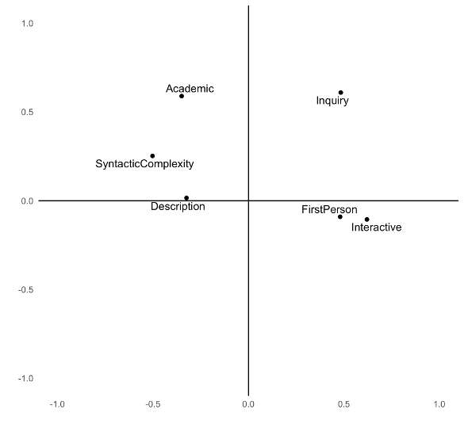
Step 2: Varimax rotation
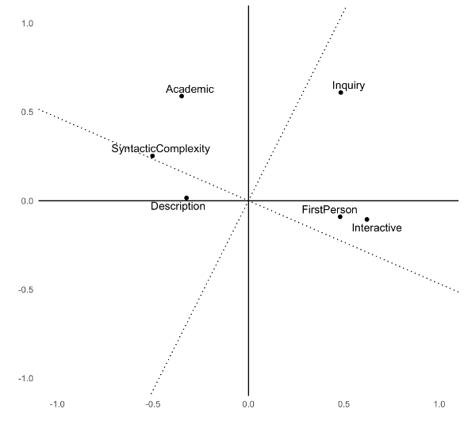
Step 2: Promax rotation
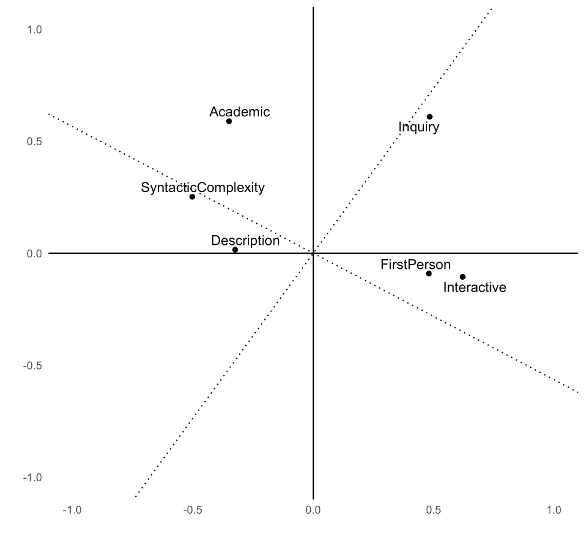
Step 3: Interpret the rotated factors
| Feature | Factor1 | Factor2 | Factor3 |
|---|---|---|---|
| f_39_prepositions | −0.68 | −0.23 | −0.06 |
| f_07_second_person_pronouns | 0.66 | −0.11 | −0.14 |
| f_44_mean_word_length | −0.65 | −0.36 | 0.04 |
| f_59_contractions | 0.61 | 0.25 | −0.03 |
| f_03_present_tense | 0.60 | −1.06 | −0.04 |
| f_67_neg_analytic | 0.57 | 0.20 | 0.38 |
| f_42_adverbs | 0.57 | 0.21 | 0.51 |
| f_12_proverb_do | 0.54 | 0.04 | 0.14 |
| f_37_if | 0.53 | −0.27 | 0.12 |
| f_27_past_participle_whiz | −0.53 | 0.08 | −0.11 |
Step 4: Place documents on the factor dimensions
\[ X = FL + \epsilon \]
- Threshold the factor loadings \(L\) to pick the large loadings
- For each dimension,
- Sum up the variables with large positive loadings
- Subtract those with large negative loadings
- Calculate for each document and take means per category/corpus/text type
Step 4: Placement on factor 1
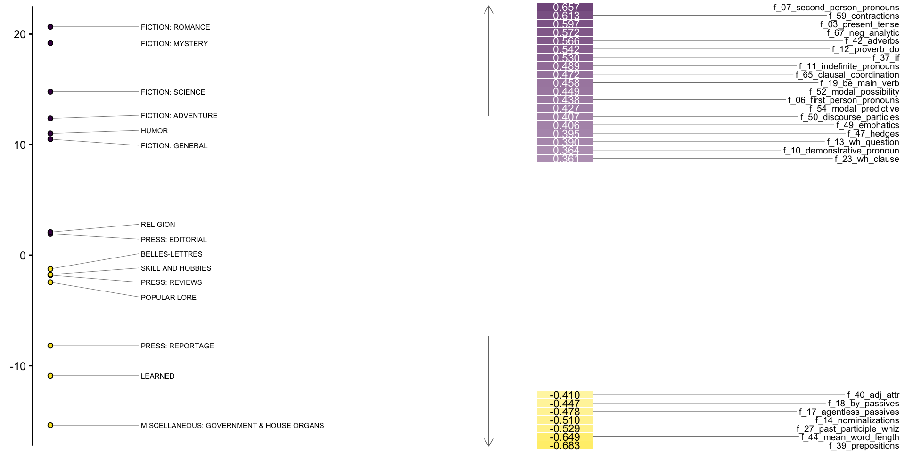
Step 4: Placement on all factors
library(gtsummary)
f1 <- lm(Factor1 ~ group, data = bc_mda)
f2 <- lm(Factor2 ~ group, data = bc_mda)
f3 <- lm(Factor3 ~ group, data = bc_mda)
tbl_merge(list(
tbl_regression(f1, intercept = TRUE),
tbl_regression(f2, intercept = TRUE),
tbl_regression(f3, intercept = TRUE)
),
tab_spanner = c("Factor 1", "Factor 2", "Factor 3")
)Step 4: Placement on all factors
| Characteristic |
Factor 1
|
Factor 2
|
Factor 3
|
||||||
|---|---|---|---|---|---|---|---|---|---|
| Beta | 95% CI | p-value | Beta | 95% CI | p-value | Beta | 95% CI | p-value | |
| (Intercept) | -1.2 | -3.7, 1.2 | 0.3 | -0.81 | -2.1, 0.51 | 0.2 | 1.7 | 0.20, 3.3 | 0.027 |
| group | |||||||||
| BELLES-LETTRES | — | — | — | — | — | — | |||
| FICTION: ADVENTURE | 14 | 9.0, 18 | <0.001 | 15 | 12, 17 | <0.001 | -0.81 | -3.7, 2.1 | 0.6 |
| FICTION: GENERAL | 12 | 7.1, 16 | <0.001 | 13 | 11, 16 | <0.001 | -0.23 | -3.1, 2.7 | 0.9 |
| FICTION: MYSTERY | 20 | 15, 25 | <0.001 | 14 | 12, 17 | <0.001 | 3.1 | -0.02, 6.2 | 0.051 |
| FICTION: ROMANCE | 22 | 17, 27 | <0.001 | 14 | 12, 17 | <0.001 | 2.9 | 0.02, 5.8 | 0.048 |
| FICTION: SCIENCE | 16 | 7.1, 25 | <0.001 | 8.1 | 3.3, 13 | 0.001 | 5.4 | -0.21, 11 | 0.059 |
| HUMOR | 12 | 4.8, 20 | 0.001 | 7.3 | 3.2, 11 | <0.001 | 2.9 | -1.7, 7.6 | 0.2 |
| LEARNED | -9.7 | -13, -6.3 | <0.001 | -7.8 | -9.6, -5.9 | <0.001 | -0.11 | -2.2, 2.0 | >0.9 |
| MISCELLANEOUS: GOVERNMENT & HOUSE ORGANS | -14 | -19, -9.6 | <0.001 | -9.6 | -12, -7.1 | <0.001 | -9.2 | -12, -6.3 | <0.001 |
| POPULAR LORE | -1.2 | -5.1, 2.7 | 0.5 | -0.58 | -2.7, 1.5 | 0.6 | -2.4 | -4.8, 0.09 | 0.059 |
| PRESS: EDITORIAL | 3.2 | -1.6, 7.9 | 0.2 | -2.3 | -4.8, 0.28 | 0.081 | -0.87 | -3.8, 2.1 | 0.6 |
| PRESS: REPORTAGE | -6.9 | -11, -2.9 | <0.001 | 0.71 | -1.5, 2.9 | 0.5 | -10 | -13, -7.8 | <0.001 |
| PRESS: REVIEWS | -0.57 | -6.2, 5.1 | 0.8 | -2.9 | -6.0, 0.18 | 0.065 | -3.9 | -7.4, -0.29 | 0.034 |
| RELIGION | 3.3 | -2.3, 9.0 | 0.2 | -3.8 | -6.9, -0.75 | 0.015 | 4.3 | 0.73, 7.9 | 0.018 |
| SKILL AND HOBBIES | -0.51 | -4.8, 3.8 | 0.8 | -5.6 | -7.9, -3.2 | <0.001 | -5.1 | -7.8, -2.4 | <0.001 |
| Abbreviation: CI = Confidence Interval | |||||||||
Common linguistic variables
Biber features
- Developed by Biber (1988) for studying different registers of English
- 67 features, mostly counts/rates, based on pattern-matching features in text
- Good for distinguishing formal/informal texts, informational vs. interactive, etc.
- Can be automatically tagged with pseudobibeR: https://cran.r-project.org/package=pseudobibeR
DocuScope
- Developed at CMU over 25 years
- Based on a dictionary of millions of phrases grouped into rhetorical categories
- Examples:
- Description
- Academic
- Information
- Interactivity
- Positive
- Negative
- Can be automatically tagged with a spaCy model trained on the dictionary: https://docuscospacy.readthedocs.io/en/latest/docuscope.html
Works cited
Biber, Douglas. 1985. “Investigating Macroscopic Textual Variation Through Multifeature/Multidimensional Analyses.” Linguistics 23 (2): 337–60. https://doi.org/10.1515/ling.1985.23.2.337.
———. 1988. Variation Across Speech and Writing. Cambridge University Press.